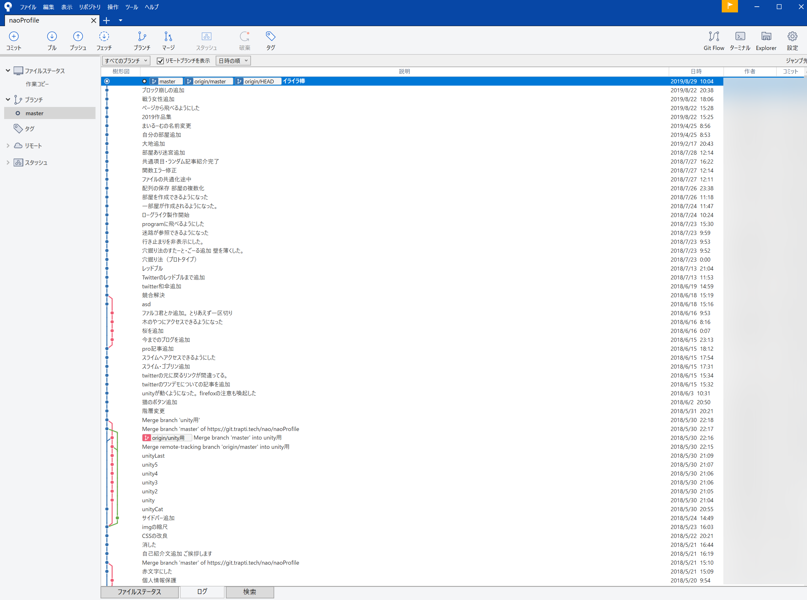

このサイトを作った時に使ったSourcetreeについて載せます。
このサイトを作った時に使ったSourcetreeについてです。
なお、このサイトを載せているサーバーは東京工業大学デジタル創作同好会traP のサーバーをお借りしています。
Gitとは、ターミナルやコマンドプロンプトから動かすファイル管理システムのことです。 編集したファイルを編集前の状態に戻したり、進めたり、また他の人との共同開発で違う場所を編集した場合に、 それを一つに統合する場面で使います。
GitのクライアントソフトであるSourcetree とは、Gitをターミナルやコマンドプロンプトからではなく、もっと簡単に扱えるようにしたツールです。
更新期間が空いたりしていますが、以下の通りコミットして作っています。
今だれがどこを編集しているかが視覚的に理解できるので、Gitは共同開発には必須のものです。 Sourcetreeで間接的にGitを操るでも、直接でもいいので、プログラマーに限らずゲーム作りなど一つのコンテンツをつくる つもりがあるのならためには必ず触っておくべきでしょう。